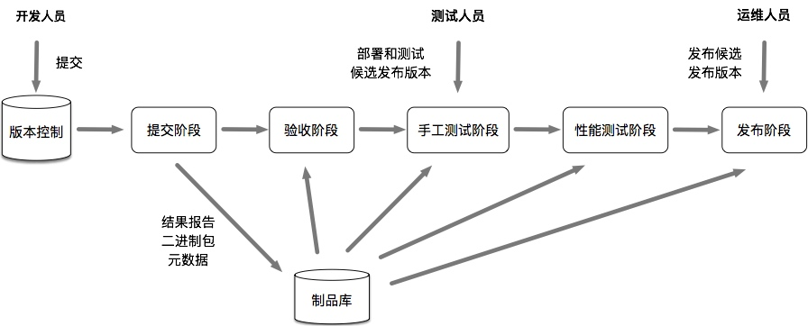
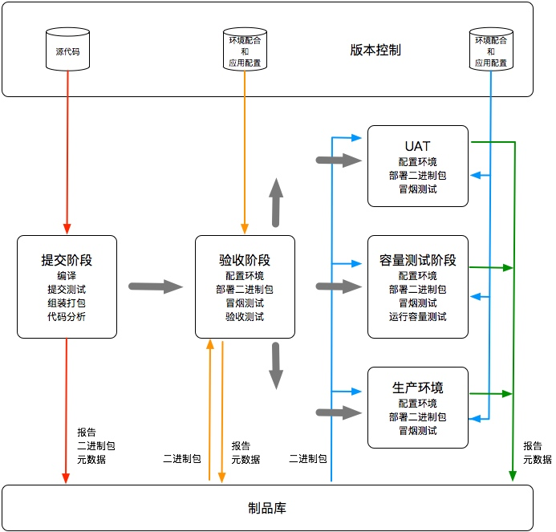

推荐阅读 2018.08
Week 1
1、书籍《持续交付：发布可靠软件的系统方法》
文中有很多重要思想，通过对构建、验收、部署、发布这四个流程的自动化，对软件的代码、环境、配置、数据四个方案进行控制，使得更加快速且可靠地交付有价值的软件成为可能。是很多大公司构建持续交付流程方案的基石。


2、书籍《数据驱动：从方法到实践》

3、A one year PWA retrospective
-- by Pinterest Engineering
为了保持构建依赖的清晰与简洁，团队做了两件事：一是通过构建依赖图表，当构建包体积的增大比例过大时进行警告；二是通过自定义eslint规则，来限制外部依赖的引入。
We share code extensively across subsites for *.pinterest.com, and so we have certain measures set up to ensure that mobile web’s dependencies stay clean. First is a set of graphs reporting build sizes with alerts for when bundles exceed permitted growth rates. Second is a custom eslint rule that disallows importing from files and directories we know are dependency-heavy and will bloat the bundle.
同时，由于使用redux，所有可以数据有统一来源，因此可以通过数据模型来加快交互后的数据展示。例如点击列表，可以进入详情页并展示一部分（列表中）已有的数据项，其余通过接口获取。
By having a single source of truth for models, like a Pin or user, it makes it trivial to show the information you have while waiting for more to load. For example, if you browse a feed of Pins, we have information about each Pin. When you tap on one, it takes you to a detailed view. Because the Pin data is normalized, we can easily show the limited details we have from the feed view until the full details finish being fetched from the server.